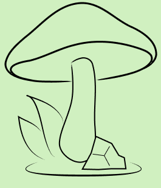
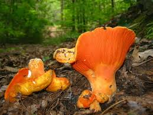

What is the MycoVerse? The MyCoverse is a non-profit database organization that stores different types of mushrooms, classified by their properties such as: consumable, unsafe, medicinal, etc.
Warning! This is a newly formed website, so some information may not be entirely accurate or missing. Please help us by contributing data. Thank you!
What is a mushroom? Mushroom are the fleshy, spore-bearing fruiting body of a fungus, typically produced above ground on soil or another food source. These mushrooms grow from underground mycelium and can expand rapidly under favourable conditions, with its properties varying depending on the species. Some mushrooms are beneficial and can either be used for medicine or simply be consume, while other types could be psychotic or toxic to humans.
The Death Cap is a deadly and poisonous mushroom originally found in Europe, but was later to other parts of the world. They have generally greenish caps and can be found during summer and autumn. It is estimated that as little as half of this mushroom contains enough toxin to kill an adult human. It is also responsible for 90% of mushroom-related fatalities every year.
Giant Puffballs are a type of Puffball mushroom that can be found in meadows, fields, and deciduous forests during late summer and autumn within temperate areas throughtout the world and are edible when young. The fruiting body of this puffball mushroom begins to develop within a few weeks and soon begins to rot and decompose, becoming dangerous for consumption.

The Lobster Mushoom is a common type of parasitic mushroom that grow on certain species of mushroom, turning their outer shell into a reddish orange colour resembling the appearance of a cooked lobster. They can be commonly be found wooded areas, and are generally edible even enjoyed worldwide, although could become inedible if it parasitises a toxic host.
This website is for educational purposes only. Please refrain from consuming wild mushrooms without the help of an expert or without proper guidance.